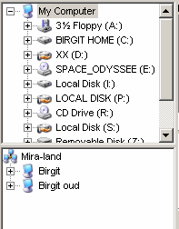

FileNurse, Search
Introduction
This search function has some advantages over the normal explorer search function:
|
 |
Directory Trees
There are 2 directory trees. The directory on the top starts at "My Computer" and therefore will list all the drives (both physical drives and mapped network drives). The directory at the bottom, starts at the first item of "Microsoft Windows Network", the location where all the LAN network paths are located.
It's not necessary to map the LAN paths to drive-letters, before using them as search paths.
By double-clicking an item in one of the directory trees, the item is copied to the location memo, so the path will be included in the search criteria. |
|
|
Search Paths and Masks
The upper memo is the location memo, you put all the drives, paths that should be included in this memo. Also network locations may be included (see directory trees). (for an easier reading, empty lines may be inserted)
In the lower memo all the filemasks can be entered. There are a few special masks: ....
With the Search button a new search is started.
By selecting 2 files and then pressing the GoTo button, all the files in the 2 directories will be compared and listed. |
|
|
FileList
The filelist contains all the files (in lowercase) that matches the search criteria. You can order the files, by clicking on the column header.
By selecting 2 files and then pressing the GoTo button, all the files in the 2 directories will be compared and listed. |
Detail Criteria
With the controls below, you can refine the search.
If "Exact Match" is selected, only the files that have exactly (no more and no less) the flags that are checked. Otherwise all the files that has no-flag or ...
R = ReadOnly
A = Archive
H = Hidden
S = System
D = Directory
V = Volume (not used here)
.. = NTFS Network file